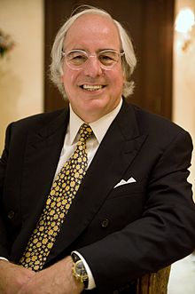

Die Handlung des Filmes „Catch Me If You Can“ beruht auf der Lebensgeschichte des Frank William Abagnale Jr (Auf dem Bild rechts zu sehen), ein US-Amerikanischer Hochstapler und Scheckbetrüger. Der Ablauf des basiert größtenteils auf Frank Abagnales Autobiografie, jedoch gibt es auch einige Abweichungen und Auslassungen.
Frank Abagnale wurde 1948 in Bronxville, New York geboren und begann 1964 mit Scheckbetrug seinen Lebensunterhalt zu finanzieren. Wie auch im Film gezeigt gab er sich als Pilot der Pan American Airlines aus, da dieser Betrug mit großem gesellschaftlichen Ansehen verbunden war und dazu führte, dass er größere ungedeckte Schecks einlösen konnte. Außerdem begann er wie im Film damit Dead-Head-Flüge zu nutzen, um seinen Handlungsraum zu erweitern und den Behörden zu entkommen.
Nachdem er auf einem Flug beinahe enttarnt worden wäre begann er in anderen Professionen sein Glück zu versuchen. So arbeitete er beispielsweise als Arzt oder Rechtsanwalt. Außerdem behauptet er für ein Semester and der Brigham Young University, als Assistent für Soziologie, gearbeitet zu haben. Die Universität sieht diese Behauptungen jedoch als Falsch an.
Mit 21 Jahren hatte er bereits einen Schaden von rund 2,5 Millionen Dollar verursacht. Dieser Schaden verteilt sich auf alle 50 Bundesstaaten der USA und 26 weitere Länder. 1969 wurde er dann in Frankreich gefasst und nach einer kurzen Haft in Frankreich und Schweden wurde er schließlich in die USA ausgeliefert, wo er zu weiteren 12 Jahren Haft verurteilt
Im Jahr 1974 bekam er dann ein Angebot der US Regierung, vorzeitig freigelassen zu werden im Austausch dafür, dass er seine Kenntnisse dem FBI als Sachverständiger zu Verfügung stellt. Heute besitzt er eine eigene Firma, die Abagnale & Associates, die sich auf Scheckbetrug und Dokumentenfälschung spezialisiert hat. So berät er nun vor allem Hotels, Banken und Fluglinien zur Prävention solcher Verbrechen.
Jedoch wird mittlerweile ein Großteil seiner Erzählungen in Frage gestellt, so gab es die von ihm Angegebene Stelle als Arzt zu der Zeit in dem Krankenhaus in dem er angeblich gearbeitet hat garnicht. Außerdem besteht Zweifel darüber, wie glaubwürdig der Rest seiner Erzählungen sind. Denn nach einem 2020 erschienenen Buch basiert der Großteil seiner Erzählungen auf Übertreibungen. Auch stand er vielen Behauptungen zum Trotz, nie auf der Liste der FBI Top 10 meistgesuchtesten Personen.
Im Jahr 1980 verkaufte Frank Abagnale die Filmrechte an seiner Autobiografie an die Produzenten Norman Lear und Bud Yorkin, nachdem diese ihn in der Tonight Show gesehen hatten.
Zwei Jahre später verkauften sie die Rechte an Columbia Pictures, die wiederum die Rechte an den Produzenten Hall Bartlett verkauften. Bartlett und sein Geschäftspartner Michael J. Lasky beauftragten Steven Kunes mit dem Schreiben des Drehbuchs, doch Bartlett starb, bevor das Projekt einen Verleiher fand. Die Rechte wurden dann an Hollywood Pictures, eine Abteilung von Disney, verkauft, und als das Projekt ins Stocken geriet, wurden die Rechte erneut an Bungalow 78 Productions, eine Abteilung von TriStar Pictures, verkauft.
Von dort wurde das Projekt Steven Spielberg von DreamWorks Pictures vorgelegt Laut Daily Variety erwarb der ausführende Produzent Michel Shane 1990 die Filmrechte für Paramount Pictures. Im Dezember 1997 kaufte Barry Kemp die Filmrechte von Shane und brachte das Projekt zu DreamWorks, wobei Jeff Nathanson das Drehbuch schrieb. Im April 2000 sollte David Fincher im Laufe einiger Monate Regie führen, stieg aber zugunsten von Panic Room aus. Im Juli 2000 war Leonardo DiCaprio als Hauptdarsteller im Gespräch, und Gore Verbinski sollte Regie führen. Spielberg unterschrieb als Produzent, und die Dreharbeiten sollten im März 2001 beginnen.